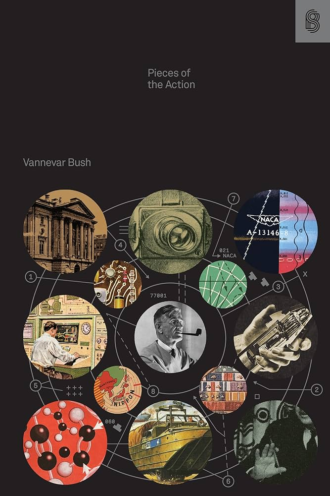

Book Review: Pieces Of The Action
12 October 2025

I'm back! And I have been reading (and doing other stuff). More on that later perhaps. Let's move on to the review. I recently (today) completed Pieces Of The Action by Vannevar Bush, published by Stripe Press. I've made it a goal to read all 18 Stripe Press books, and figured I would write a review of each one.
This is actually completed book number 4: I first read Where's My Flying Car after seeing some discussion of it on Twitter. That book was transformative, and frankly I still think about it all the time. I decided to investigate the other options in the Stripe Press arsenal, and have mostly been disappointed since then, however. The next book I attempted to start was PotA, but I ended up buying and completing The Big Score and The Making of Prince of Persia, which were both enjoyable but of less substance than Wheres My Flying Car. Next up is either the Art of doing science Hamming book, or the science: the elixir book. Stripe hasn't made my task any easier, since they've released 3 new books in quick succession as I've been chewing (slacking off) through these couple.
To establish some minimum quality standards and set some guidelines, each review will have some personal updates followed by my general thoughts on the book, followed by a summary outline, then some takeaways.
So, Pieces of the Action: to be honest I was hoping for a little more from this book, but still found it enjoyable. Bush architected how public science has worked for the past 70+ years in America (about half the world's research capacity, from Speed And Scale), and emulated around the world. But this is mostly a memoir of funny anecdotes from the war, followed or preceeded by some vague recommendations. But these are the type of stories and nuggets of wisdom that are meant to percolate in the back of one's mind, and though 1940s public sector organizational structures don't really map to present day tech startups well, there's probably many bits that one could vaguely recall and thus get value from. But that makes, in my opinion, summaries of the book particularly useless, as you don't get the general vibe of the journey Bush takes you on each chapter. And of course, the stories themselves are good fireside tales.
Summary
- Forward: the only part not written by Van; Stripe let's Ben Reinhardt summarize the book, basically.
- Preface: one page, Van tells us where the Title comes from (youthful slang, hah)
- I 60 Years: a sort of summary of the progress (mostly social, some technological) of the past 60 years. Van is an optimist, and a middle-of-the road liberal.
- II Of Organizations: this and the next chapter are the meat of the book. Organizations need two things to succeed: a clear, singular chain-of-command, and openness; to ideas coming from anywhere (the one constantly talked about is civillian science -> military organizations). This chapter has some of the lineage of the NDRC proxima OSRD. This includes various admin tasks, talking to FDR, getting funding quick and then butting out, and the "Manhattan District" (the bomb) which too big and was spun out of OSRD into the army.
- III Of Stumbling Blocks: this drives the second point above home, that organizations should be open to outsiders and civilians for any innovation. Almost the entirety of this chapter is devoted to antisubmarine warfare, which Van had his own invention for, the navy was mostly asleep on, and OSRD and the british took more seriously. The DUKW (those truck-boats that stormed the beaches of Normandy) and the Proximity Fuse (which uses Radar to make sure bombs explode right in front of their target) also get lots ot time here. Some great stories here.
- IV: Of Tyros: tyros are conmen, basically; overconfident inventors that claim authority they don't have. The brit Geoffrey Pyke is the primary culprit: he had an idea for a huge Pykrete aircraft carrier in the Pacific called Habakkuk, and a daring airdrop-jetskis-with-corkscrew-drives-in-Norway, called Weasels (really the first snowmobile). The theme here was Pyke was adept at self-promotion and claiming someone more important than himself (usually Churchill) had already approved his plans. There was also some smaller american examples. Shades of Elizabeth Holmes here. The solution is informed leaders, while still taking suggestions and ideas from more junior amateurs (who must exercise humility).
- V Of Inventions and Inventors: Bush himself has a number of inventions, which he catalogues at the start. Then he discusses when to pursue an invention further (when there is potential for a successful business, aka make something people want). Lots of this chapter is Bush's thoughts on patents and antitrust, and how to balance the two; I get the sense this part is significantly out of date, but I don't know anything on the topic!
- VI Of Energies, Engines, and Hobbies. This chapter is a slow meander of various stuff Van has been getting into since he's retired. He makes a point to say one *should* retire, as one gets less sharp and tends to drag down progress in your field rather than push it forward when one gets old. It's also necessary to pass the torch. Anyway, he talks about his big hobby, engines, and how steam engines are underrated compared to internal combustion in cars and such. This pivots to a wider point that innovation is hard to introduce in fields with identical products and tight competition (autos) versus frequent new products and differentiation (pharmaceuticals). Or some of that discussion was likely the previous chapter...either way, we are solidly in "reminiscing" territory here, and less so advice. It ends by discussion of what makes a good hobby (creativity, enjoyment, purely individual motivations, but also skill and effort).
- VII Of Teachers And Teaching: Van describes what makes a good teacher. It sounds like he never really had but one or two good teachers in his career, so this chapter is a bit sad. I get the sense that teaching and learning is across the board in a much better state in the present day. Either way, the key points are enthusiasm for the topic, attention to your students and their questions, unique ways to get them engaged, all that good stuff. Among this chapter is some soppy pages about Van's relationship with his dad, and his PhD advisor, and his own experiences teaching.
- VIII Of Leaders And Leadership: this is the presidential anecdotes chapter. The sage advice is that, as a leader, one should be humble, seek advice from many sources, have competent assistants, and trust your underlings. Simple enough. In general, Bush adores FDR, liked Truman and Hoover, thought Eisenhower didn't have enought advice from the civilian science community, and thought Churchill had a stick up his ass. The book ends rather suddenly.
Now for takeaways; as you probably guessed from the summary:
Openness: organizations should be open to new ideas and collaborators from outside. I think overall software does a pretty good job here, as many companies have a relatively open culture, and open source is celebrated.
Humility: this one is a bit more intangible, but leaders should be humble, seek many perspectives, and care about their subordinates. This is where I too think democracies and free markets tend to outperform their alternatives, for obvious reasons.
So, that was Pieces of The Action. I mightily enjoyed it, but the dated language made it a bit challenging of a read, and like I said earlier, I wouldn't recommend it to someone who is trying to extract actionable insights. But Vannevar Bush is a great character, certainly the type of honest, hardworking man with a sense of humor who built many of the institutions this country relies on.
On to the Braben book, I think. And some retroactive reviews of the those I mentioned previously.